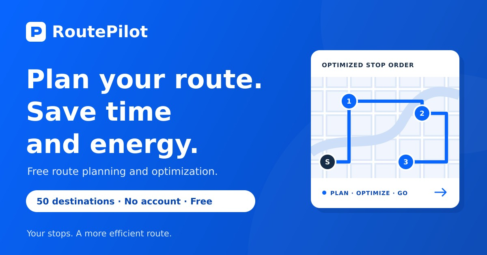
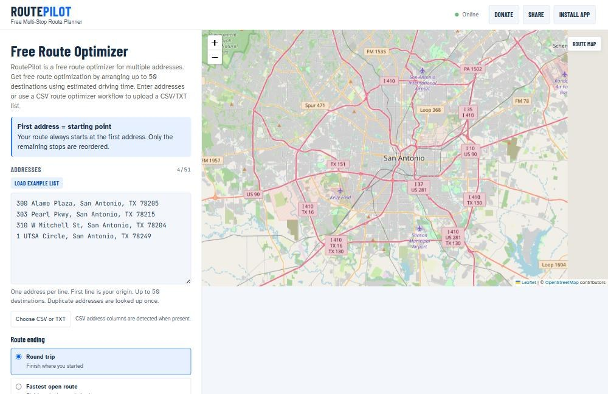
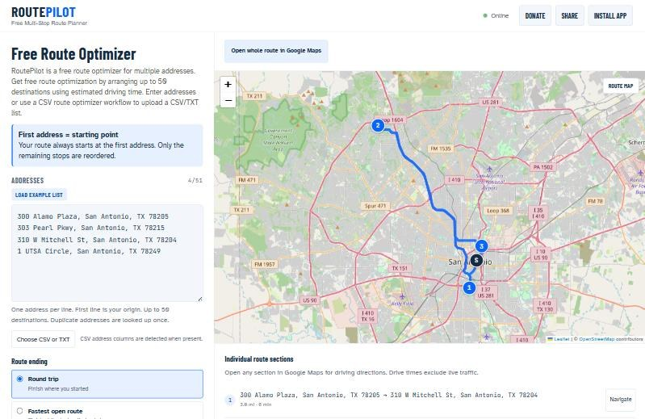
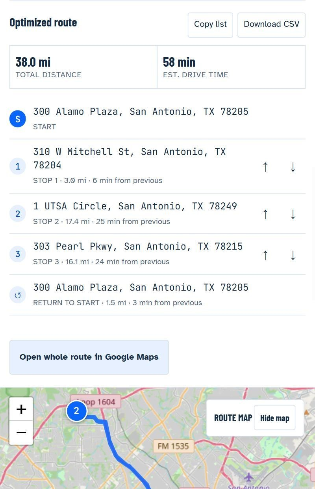

RoutePilot: A Free Route Planner for Multiple Addresses (Up to 50 Stops)

I deliver AC filters all over San Antonio, and some days that means a dozen stops. I went looking for a free route planner for multiple addresses that would just tell me the best order to drive them. I couldn't find one I liked, so I built it. It's called RoutePilot.
The short version
- Paste or upload your list of addresses (up to 50 stops).
- Pick how the route should end: back home, at the last stop, or at a fixed address.
- Hit Optimize route and drive the stops in the order it gives you.
Why I needed a route planner for multiple addresses
Google Maps is great for getting from A to B. But when you have ten stops, it drives them in whatever order you typed them. It doesn't figure out the best route between multiple addresses for you, and it limits how many stops you can add.
The tools that do optimize routes are mostly built for delivery companies, with sign-ups, monthly plans and API keys. I just wanted to paste my addresses and go. If you run deliveries, service calls, sales visits or errands, you've probably felt the same thing.
What RoutePilot does

RoutePilot is a free route optimizer for multiple addresses. You type or paste your stops, one per line, and it reorders them by estimated drive time so you spend less time on the road.
- Up to 50 destinations plus your starting address.
- Your start stays put. The first address is always where the route begins. Only the other stops get reordered.
- Three ways to finish: a round trip back to the start, the fastest open route (end at whichever stop is last), or a fixed final address you choose.
- CSV upload. Already have your stops in a spreadsheet? Upload a CSV or TXT file. RoutePilot finds the address column for you.
- No account, no API key, no cost.
How to optimize a route with multiple stops

1. Add your starting point
Put the address you're leaving from on the first line: your shop, warehouse or home.
2. Add your stops
Add each destination on its own line, or click Choose CSV or TXT to upload a list. Duplicate addresses only get looked up once.
3. Choose how the route ends
Pick Round trip if you're coming back, Fastest open route if you don't care where you finish, or Fixed final address if your last stop has to be a certain place.
4. Optimize and drive
Click Optimize route. You'll get your stops in order with the total miles and estimated drive time. Then tap Open whole route in Google Maps for turn-by-turn directions. Long routes get split into numbered parts that work better on a phone.
It works great on your phone

Most of my route planning happens in the truck, so RoutePilot is built for phones. Every stop shows its distance and drive time from the one before it. You can nudge a stop up or down with the arrows, copy the list, or download it as a CSV. You can even install it like an app from your browser.
Who it's for
- Small businesses doing their own deliveries
- HVAC, plumbing, cleaning and lawn care techs with several jobs a day
- Sales reps and realtors visiting multiple properties
- Anyone running a long list of errands
A few honest notes
- Drive times come from OpenStreetMap road data and don't include live traffic.
- RoutePilot doesn't save your route on its server. Address lookups are cached in your own browser.
- It uses free public map services, so please don't hammer it with huge repeated bulk requests.
If you'd rather think in terms of a list of stops than a route, I also built a sister tool, StopSort, that sorts your stops into the best order.
Frequently asked questions
Is RoutePilot really free?
Yes. There's no account, no subscription and no API key.
How many addresses can I add?
Up to 50 destinations plus your starting address.
Can I upload a spreadsheet of addresses?
Yes. Upload a CSV or TXT file with one address per line or an address column, and RoutePilot will detect it.
Does it work with Google Maps?
Yes. Once your route is optimized, open it in Google Maps for turn-by-turn navigation.
Got a list of stops to run? Paste them into RoutePilot and see how much driving you can cut. It's free, and it takes about a minute.